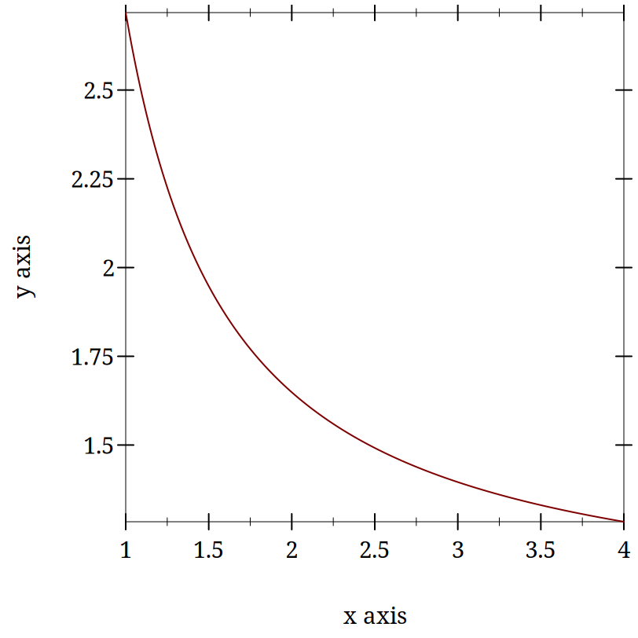

2 What is Computation and is Cognition Computable?
2.1 What Is Cognition?
The technical challenges for modeling in psychology are mastering the mathematics and programming necessary to formally express an idea and to implement a simulation to examine the consequences. The conceptual challenge is to decide what it is you are modeling. Is a mathematical formula that reproduces an observed behavioral pattern a model? In the late 1800s Ebbinghaus, using creative, and for their time, innovative, Herculean methodologies, demonstrated that the proportion of items retained in memory declines predictably over time. The form of the forgetting curve is exponential.
Figure 2: Forgetting Curve - Wikipedia


2.1.1 Cognition is ...
Which of these opinions, if any, do you agree with and why?
Cognition Section Bibliography
Tim Bayne, David Brainard, Richard Byrne, Lars Chittka, Nicky Clayton, Cecilia Heyes, Jennifer Mather, Bence Ölveczky, Michael Shadlen, Thomas Suddendorf, and Barbara Webb. What Is Cognition? Current Biology 29, 2019. https://doi.org/10.1016/j.cub.2019.05.044 |
2.2 Is Cognition Computational?
2.2.1 Motivating questions:
Is there anything a human can think that a computer cannot compute?
What does it mean for a function to be "computable"?
What does it mean to say that cognition is computational?
What implications does the answer have for modeling cognition?
2.2.2 Introduction
Is there a difference between computational cognitive neuroscience and cognitive computational neuroscience (Naselaris et al. 2018)? The former seems to suggest that we are interested in explaining cognition directly from the actions of neurons and then using computational tools as adjuncts to aid this attempt. On the other hand, when you reverse the order it seems as if you are trying to explain thinking via the computational accounts of neuronal function. The latter seems to require a clear link between notions of computation and models of thinking. To use Marr’s three levels as a scaffold (McClamrock 1991) This reference is an older one, and not the original, but it does use LISP as its example, so it seems to relate nicely to the programming language we are using for our exercise., we are taking neurons as our implementation, positing algorithms for them, and assuming that computational principles populate the level of our cognitive abstractions. Measures of success depend on the meanings of terms.
In all of this is the basic idea that if you want to understand mind you need to develop a theory (and understand what that word means), express your theory clearly, for which the best language is math, and then explore the implications of your construction via simulation, which requires the writing of code. Mind → Theory → Math → Code. Let’s explore a little more what is implied by this pathway. What it means to use computing as a model for mind.
2.2.3 Computing in Minds and Computers
One definition of whether something is computable is whether there exists a Turing Machine that computes it. That Turing machine must halt. Since one cannot decide in advance for all machines whether they will halt or not it turns out that whether or not something is computable is, in general, undecidable.
Although most of us learned the name "Turing" in the context of whether a computer has human intelligence, the so-called Turing test, the model of Turing computability emerged from thinking about humans computing (Turing 1936). A nice short version of this history can be found in this pdf.
2.2.3.1 Classical Computational Theory of Mind
The classical computational theory of mind says that in all important ways the mind is like a Turing machine. If we want to model (or emulate) functions of mind one way would be to build a Turing machine. However this can be a practical challenge, and one can question the insight gained from this approach. Still given the theoretical and practical prominence given to Turing computability it behooves us to know what a Turing machine truly is.
2.2.3.1.1 What is a Turing machine? Some Background and Details
a finite alphabet,
a finite set of states,
the capacity to read and write to a single location in memory, and the ability to adjust the memory location immediately left or right or to make no move at all, and
a set of instructions (or "machine table") that translates the combination of the current state and the current symbol to a new state and one of the acceptable actions.
Other models of computation are the lambda calculus and the theory of recursive functions. Those alternative accounts of computability are interesting, and may offer more insight or be more practical in some situations, but it appears to be the case that they are equivalent. Anything designated "computable" by one of these formal accounts is computable by the others as well. Does this mean that if you accept the computational mind hypothesis you must accept that the mind is able to be simulated by a Turing Machine? As a consequence does this mean that minds are multiple realizable?
Are Turing machines digital?
Is this an important distinction?
Does this mean that analog computations are omitted?
Would an analog paradigm be a better match to modeling mental activity?
2.2.4 Programming a Turing Machine: the Busy Beaver
The following is a slightly formatted version of the Wikipedia description of a Turing machine.
A Turing machine has n "operational" states plus a Halt state, where n is a positive integer, and one of the n states is distinguished as the starting state.
The machine uses a single two-way infinite (or unbounded) tape.
The tape alphabet is {0, 1}, with 0 serving as the blank symbol.
- The machine’s transition function takes two inputs:
the current non-Halt state,
the symbol in the current tape cell,
- and produces three outputs:
a symbol to write over the symbol in the current tape cell (it may be the same symbol as the symbol overwritten),
a direction to move (left or right; that is, shift to the tape cell one place to the left or right of the current cell), and
a state to transition into (which may be the Halt state).
We will use it to guide us to write a simple instance that computes a solution to the Busy Beaver problem. A n-state Turing machine has (4n + 4)2n states. The formula is (symbols × directions × (states + 1))(symbols × states). The transition function (how to figure out where to go next may be seen as a finite look-up table. Each row of the table is a 5-tuple: (current state, current symbol, symbol to write, direction of shift, next state). Our goal with the Busy Beaver problem is to run our machine to produce as long a series of uninterrupted ones as we can and halt.
What it means to "run" a Turing machine is to start in the starting state with the current tape cell being any cell of a blank (all-0) "tape", and then iterate the transition function. If the Halt state is entered then the number of 1s remaining on the tape is called the machine’s score. Different transition rules will give us different outputs, so we can score our machine based on its performance.
To restate in a more general way, the n-state busy beaver (BB-n) game is a contest to find an n-state Turing machine having the largest possible score — the largest number of 1s on its tape after halting. A machine that attains the largest possible score among all n-state Turing machines is called an n-state busy beaver, and a machine whose score is merely the highest so far attained (perhaps not the largest possible) is called a champion n-state machine (This ends the lightly edited Wikipedia quote).
2.2.4.1 Why Use the Busy Beaver Problem As an Example?
The Busy Beaver Problem is non-computable
The busy beaver problem is to compute the maximum number of 1’s that a Turing machine can write before halting with the number of states equal to n. This webpage includes the proof of the non-computability of the busy beaver problem. It uses contradiction, and like most proofs relying on contradiction I find it head warping, but there it is.
2.2.4.2 A Busy Beaver Warm-Up
A simple version of the Busy Beaver problem, and one you can do by hand with pencil and paper, is the n=2 version. Create a Turing Machine with the following transition rules:
a0 → b1r
a1 → b1l
b0 → a1l
b1 → h1r
2.2.5 Busy Beaver Problem Demo Code
(struct turing-machine (state tape head-location) #:transparent #:mutable)
There is some inelegance here to handle the fact that we are not, in fact, starting with an infinitely long tape and want to build it on the fly.
(define (move-left temp-tm) (let ([loc (turing-machine-head-location temp-tm)] [lst (turing-machine-tape temp-tm)]) (if (= loc 0) (set-turing-machine-tape! temp-tm (cons 0 lst)) (set-turing-machine-head-location! temp-tm (- loc 1)))))
(define (move-right temp-tm) (let ([loc (turing-machine-head-location temp-tm)] [lst (turing-machine-tape temp-tm)]) (when (= (+ loc 1) (length lst)) (set-turing-machine-tape! temp-tm (append lst (list 0)))) (set-turing-machine-head-location! temp-tm (+ loc 1))))
(define (move tm dir) (cond [(equal? dir 'left) (move-left tm)] [(equal? dir 'right) (move-right tm)] [else (error "illegal direction")]))
(define (tm-equal-state-value tm state value) (and (equal? (turing-machine-state tm) state) (= (list-ref (turing-machine-tape tm) (turing-machine-head-location tm)) value)))
(define (upd-tape-location tm value) (set-turing-machine-tape! tm (list-set (turing-machine-tape tm) (turing-machine-head-location tm) value)))
(define (pretty-print-tm tm) (display (format "state:~a, tape: ~a, head: ~a\n" (turing-machine-state tm) (turing-machine-tape tm) (turing-machine-head-location tm))))
(define (rule tm) (cond ((tm-equal-state-value tm 'a 0) (set-turing-machine-state! tm 'b) (upd-tape-location tm 1) (move tm 'right)) ((tm-equal-state-value tm 'a 1) (set-turing-machine-state! tm 'b) (upd-tape-location tm 1) (move tm 'left)) ((tm-equal-state-value tm 'b 0) (set-turing-machine-state! tm 'a) (upd-tape-location tm 1) (move tm 'left)) ((tm-equal-state-value tm 'b 1) (set-turing-machine-state! tm 'h) (upd-tape-location tm 1) (move tm 'right))))
(define (busy-beaver-2-do tm) (pretty-print-tm tm) (do ([i 0 (+ i 1)]) ((equal? (turing-machine-state tm) 'h) (display (format "Loops equaled ~a\n" i))) (rule tm) (pretty-print-tm tm)) tm)
(begin (require "./code/tm.rkt") (define initial-turing-machine (turing-machine 'a (list 0) 0)) (define working-tm (struct-copy turing-machine initial-turing-machine)) (busy-beaver-2-do initial-turing-machine))
state:a, tape: (0), head: 0
state:b, tape: (1 0), head: 1
state:a, tape: (1 1), head: 0
state:b, tape: (0 1 1), head: 0
state:a, tape: (0 1 1 1), head: 0
state:b, tape: (1 1 1 1), head: 1
state:h, tape: (1 1 1 1), head: 2
Loops equaled 6
(turing-machine 'h '(1 1 1 1) 2)
2.2.5.1 Testing the Busy Beaver Code
The code typed above can be found at ../code/tm.rkt. Open DrRacket. Open this file (you can use the navigate to it with DrRacket’s built-in file manager if the link does not work for you). Click run. You should seen no error messages (or much of anything else). Now add the code "(busy-beaver-2-do initial-turing-machine)" to the bottom of the file, and re-run the file. You should see the output typed above in the lower, execution, window.
In your editor make a copy of this file with a new name. Test that you can edit the code by changing the line of what to do with ’a 0 to transition to ’h instead of ’b. Save and re-run. You should halt after the first state. If that is working, you have the basics functioning and now can tackle the homework.
2.2.5.2 Busy Beaver Homework
Come up with a version of rules for n=4. All you will need to edit is the rules section. Everything else should just work. After you are satisfied create a new function for busy-beaver-4-do that uses your new rule. Add the line invoking it to your file. That will allow me to run your racket program from the command line and see the results of your rule in my terminal. You can test this yourself by running "racket <your-name>-busy-beaver-4-do.rkt" when you are in the home directory of your program.
I will run your programs against each other in class (hopefully). Don’t try and break any records, but do spend sometime trying to get the numbers up. We are learning about Turing machines and how to write code the implements mathematical and theoretical ideas for the elucidation of cognition. Spending too much time perfecting your Busy Beaver implementation misses the point, but just getting something that works without crashing doesn’t give you enough chance to think about this model of computation. This will also give you a chance to start to learn the racket language a little bit.
2.2.5.3 Resources
This tutorial article with examples has a nice visualization. If you are having a little trouble getting started busy-beaver might help.
Why the Busy Beaver? Because the solution to this problem is noncomputable. What does it mean that we are solving this with our computers and our own reasoning, but that the problem itself is not computable? Does that present any hurdle at all for using the Turing Machine as a model of mind?
2.2.6 Optional Material
Someday some of this material may make it into the regular portion of the course. For now, it is simply left here as a guide to additional topics that one may want to think about when engaged in cognitive computational (neuroscience) modeling.
2.2.6.1 Functionalism
One of the schools of thought in the domain of Philosophy of Mind, functionalism comes up a lot in computational modeling. It suggests that if you know what something does, what its function is, you know the important stuff. You don’t need to think about mental states in terms of what they are as "things". You might think about them in terms of what they "do". Mental states serve a functional role in a cognitive system. The important thing is how they relate to the sensory input, motor output and to each other.
Food for Thought Question: If you accept that the mind is a computational machine, and that for all computable problems an equivalent Turing machine exits, does that require you accept that any functionally equivalent computational system, regardless of its hardware (i.e. it could be vacuum tubes or the population of China) would be a mind?
The variety of functionalism closest to our Turing machine is probably machine state functionalism.
After you familiarize yourself with functionalism, you might return to the question above and revisit your answer.
2.2.6.2 Is the Computational Account of Mind Trivial?
Any sufficiently complex physical system (such as the molecules comprising the wall behind me or the brain) can be shown to be isomorphic to the formal structure of any program. If you view the mind as a program than you might as well say that you and the wall behind you share the same thoughts.
There is no room for the time scale to matter and there is an intuition that it should. We could implement a Turing machine with water wheels, levers & pulleys, vacuum tubes, or transistors. The speed with which the resulting machine computes will be very different, but they will all perform the same computation. Do we think that a model of mind that is blind to time scale can possibly be right?
Discrete or continuous. Turing machines are discrete, finite state machines. Time and thought operate in continuous time (don’t they?). Are discrete models that move forward in time in discontinuous steps capable of modeling us who live in and think in the world of continuous time?
Computations might model something without explaining it. Weather simulators predict rain, but they don’t themselves actually rain. Flight simulators do not fly. Even if a computer program simulated a mind it does not mean it would be thinking. Does the simulations, explanation or demonstration distinction bother you?
2.2.6.3 What Would a Non-computational Theory of Mind Be?
2.2.6.3.1 Logical Behaviorism
Mental states are predispositions to behave. There is no internal state corresponding to belief that is mental. Belief is only a predisposition to behave in a certain way in a certain context. We characterize people by what they are likely to do without ascribing to them associated mental states. The person who first developed this idea, Gilbert Ryle, asserts that being a mentalist is incompatible with being a realist (that is it makes you a dualist). Logical behaviorism does not seem to be much in vogue now, but it is another take on the important issues (Schütte 2008).
2.2.6.3.2 Type-Identity Theory
Mental states just are brain states. Since our brains are different from time to time (synaptic weights change; cells die (and a few born)) does that mean we never have the same mental state twice? Since no two people have the same brain does that mean no two people ever have the same mental states?
2.2.6.4 Alternatives to the Turing Machine Model of Computation
Although the Turing Machine account of computation seems to dominate examples in psychology and neuroscience this may be an artifact of the example of the Turing Test as a prominent example of evaluating machine intelligence. There are other formal theories of computation, and as stated above they are all conjectured to be equivalent. The one I describe below has had a large influence on programming language design. It was the mathematical idea that motivated the development of LISP, which via its descendent Scheme, became the Racket language we are using in this course.
2.2.6.4.1 Lambda Calculus
The lambda calculus was developed as a theory of functions. John McCarthy invented Lisp as a theoretical exercise for working on the theory of computable functions. He felt the Turing machine to be too mechanical and too awkward for this work, and wanted a better tool, a better metaphor. He adopted the lambda of the lambda calculus and the ~eval~ function to take in lisp programs and execute them. Later one of his collaborators observed that it was relatively straightforward to implement this as a real programming language. A bit more of the history is here. But in order to try and learn a bit of the lambda calculus you might look at (Michaelson 2011)
Why a "lambda" (λ)? The λ of lambda calculus doesn’t really mean anything. It just signals that you have a lambda expression. Its creation as the symbol for the function calculus was an accident of notation and the limits of older typewriters.
Some Details and Interesting Facts about the Lambda Calculus
There is not just one lambda calculus.
To have the lambda calculus you need to specify your algebra. What are the rules for reducing things (i.e. your computations), what are the allowed symbols, and what do things mean? A "lambda calculus" is a way of handling "lambda expressions."
Into the Weeds
Want to implement the lambda calculus yourself on a computer (using Common Lisp)? Check out this blog post.
Terms are either simple variables x or y or composite terms \lambda~v~t_1. Having two terms next to each other (~t_1~t_2) means "apply" t_1 to t_2. The meaning of a term like \lambda~v~.~ t_1 is the value returned by the lambda abstraction. The meaning part is sometimes designated in writing by formulas using arrows, such as t_1~\rightarrow~t_2.
Beta reduction
Beta abstraction
Alpha conversion
Eta reduction
Normal Form
The equivalent of the halting problem for the Turing machine is the reaching of a normal form in the lambda calculus.
Functions have the form λ <name> . <body>
Note the "dot". This separates the name from the body of expressions that it names.
<body> is also an expression (note the recursion that is built in).
Write the lambda expression for the identity function? What is the identity function?
Apply the identity function to itself.
What is the identity function in Racket?
- An interesting lambda expression is the "self-application" expression:\lambda~s . (s~s).With pencil and paper try to
apply this to the identity,
apply the identity to the self-application,
apply the self-application to itself. What is its termination status?
Computational Cognition References
R. McClamrock. Marr’s three levels: A re-evaluation. Minds and Machines 1, pp. 185–196, 1991. https://doi.org/10.1007/BF00361036 |
Greg Michaelson. An introduction to functional programming through Lambda calculus. Dover Publications, 2011. https://www.cs.rochester.edu/~brown/173/readings/LCBook.pdf |
Thomas Naselaris, Danielle Bassett, Alyson Fletcher, Konrad Kording, Nikolaus Kriegeskorte, Hendrikje Nienborg, Russell A Poldrak, Daphna Shohamy, and Kendrick Kay. Cognitive Computational Neuroscience: A New Conference for an Emerging Discipline. Trends in Cognitive Sciences 22, pp. 365–367, 2018. https://dx.doi.org/10.1016/j.tics.2018.02.008 |
Michael Schütte. Logical Behaviorism. Encyclopedia of Neuroscience, pp. 372–375, 2008. http://dx.doi.org/10.1007/978-3-540-29678-2_596 |
A. M. Turing. On computable numbers with an application to the Entscheidungsproblem. Proc. London Math. Soc. 42, pp. 230–265, 1936. |